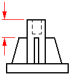
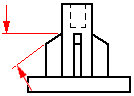
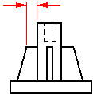
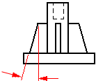

Mounting Boss Options dialog box
- Saved Settings
-
Lists saved mounting boss settings. You can access the saved settings by selecting them from the list. The settings on the dialog box display the characteristics of the mounting boss you select. You can type a name in the box to name a group of settings.
- Save
-
Saves the current settings to the name you type.
- Delete
-
Deletes the saved setting that is selected in the Save Settings box.
- Settings
-
Defines the parameters for the type of boss you are constructing.
- Boss Diameter
-
Sets the size of the boss. You can type a value or select a value from the list.
- Mounting Hole
-
Specifies that you want a mounting hole on the boss when set.
- Hole Diameter
-
Sets the size of the mounting hole.
- Hole Depth
-
Set the depth of the mounting hole.
- Stiffening Ribs
-
Specifies that you want stiffening ribs on the boss when set. You can specify the number of ribs you want by typing a value in the box.
- Offset
-
Sets the rib offset value. An offset value of zero is coplanar to the top face of the boss.

- Grade
-
Sets the rib grade value. A grade value of zero is parallel to the top face of the boss.

- Extent
-
Specifies how far the rib protrudes from the side of the boss, at the top of the boss. For example, a rib with an extent value of 2 millimeters protrudes 2 millimeters past the diameter of the boss, at the top of the boss. An extent value of zero is valid only when you have specified a rib taper angle that is greater than zero.

- Taper
-
Sets the rib taper value. A taper value of zero is parallel to the cylindrical body of the boss.

- Thickness
-
Sets the rib thickness.
- Add Draft
-
Specifies that you want to add draft to the mounting boss when set.
- Draft Angle
-
Sets the draft angle value.
- Add Rounds and Fillets
-
Specifies that you want to add rounds and fillets to the mounting boss when set. Rounds and fillets are also added to where the mounting boss intersects the part.
- Radius
-
Sets the value for the rounds and fillets.
- Preview
-
Displays a preview of the mounting boss.
- Save As Default
-
Saves the current settings as the default. Saved defaults will be used the next time you use this command. If you do not save the current settings as defaults, the previous default settings will be used.